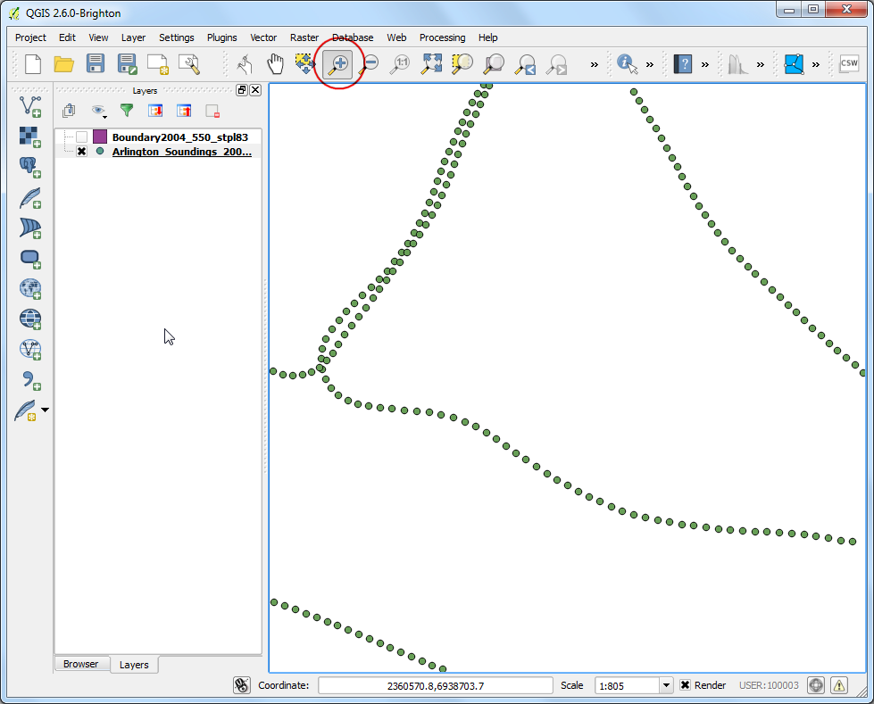
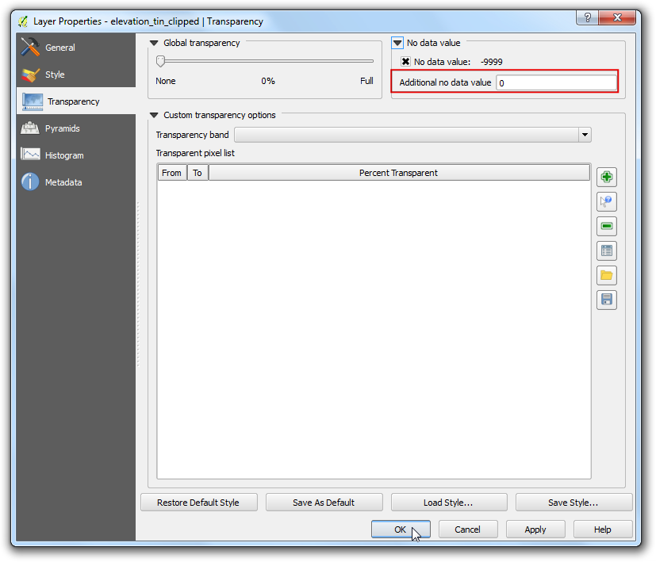

點資料內插法
GIS 系統常常把離散的點資料以內插法創造連續的面資料。自然界中很多東西都是連續的，像是海拔、土壤、溫度等等，如果我們想要分析這種面資料，是不可能把整個表面全部測量一次的。實際上的做法會是我們˙在野外只取幾個測量點，然後測量點之外的其他地方就靠內插法求得其值。在 QGIS 之中，可以透過內建的 內插工具 附加元件來執行以上所述的事情。
內容說明
我們要使用位於德州的 Arlington 湖的水深測量數據，再根據這些數據製作地形圖和等高線圖。
你還會學到這些
從點資料計算等高線
套用遮罩於影像圖層中的無資料值
為向量圖層加上標籤
操作流程
打開 QGIS，選擇 。

選擇 Shapefiles.zip 並按下 確定。

在 選擇要增加的向量圖層 視窗中，按住 Shift 鍵然後選擇 Arlington_Soundings_2007_stpl83.shp 和 Boundary2004_550_stpl83.shp 兩圖層，按下 確定。

你會看到 QGIS 中載入了 2 個圖層，Boundary2004_550_stpl83 是湖泊的邊界，我們先在圖層選單列表中把這個圖層取消勾選。

如此一來第二個圖層 Arlington_Soundings_2007_stpl83 會顯現出來。雖然資料看起來像是線，但它其實是一連串很接近的點。

點選 放大 鈕，縮放到螢幕中的任一小區域後，就可以看到點了。每個點的座標是差分 GPS 的測量值，其值代表湖泊在特定位置由測深儀測得的深度。

選擇 識別圖徵 工具然後點選任一個點，識別圖徵結果 的面板會出現在左側，上面記載此點的屬性值。在本例中，ELEVATION 屬性就是湖泊在此點的深度，而我們的任務就是要利用這些數值進行內插，求得湖泊的深度譜面以及等高線。

請確認你的 內插附加元件（Interpolation plugin）已啟用，詳細步驟請參考 使用附加元件。啟用後，選擇 。

在 內插工具 視窗中的 輸入 區塊，向量圖層 選擇 Arlington_Soundings_2007_stpl83，內插屬性 選擇 ELEVATION，然後按 加入。調整 X座標格子大小 與 Y座標格子大小 到 5，這個數值代表輸出網格的每個像素大小。由於本來源資料的投影座標系統是以呎來當單位，每個像素最終會是 5 呎的方形大小。點選在 輸出檔案 右側的 ...，把輸出檔命名為 elevation_tin.tif，最後按下 確定。
註解
內插的結果會隨著你選擇的內插方法和參數而有很大的不同。QGIS 支援兩種內插方法，分別為三角內插 (TIN) 以及反距離加權法 (IDW)，TIN 法常被使用於高程資料上，而 IDW 法則在內插其他種類的資料時較為常見，例如礦物富集度、人口等等。更多資訊請參考 QGIS 官方文檔中的 Spatial Analysis 模組。

看到 elevation_tin 圖層載入到 QGIS 後，以右鍵點選，選擇 縮放到圖層範圍，

如此一來就可以看到剛剛產生的湖泊底面全貌。內插法對於資料收集區以外的地方並不準確，所以接下來我們要依照湖泊的邊緣才接我們的湖泊底面。選擇 。

把 輸出檔案 命名為 elevation_tin_clipped.tif，裁剪模式 選擇 分析遮罩，然後選擇 Boundary2004_550_stpl83 作為我們的 分析遮罩，最後按 確定。

新的影像 elevation_tin_clipped 完成後會被載入 QGIS 中。接著我們來調整一下圖層的樣式，顯示各處海拔的不同，注意在 elevation_tin 中的最大與最小高度值。以右鍵點選 elevation_tin_clipped 圖層，進入 屬性。

前往 樣式 分頁，繪圖類型 選擇 單波段偽彩色，在 產生新的色彩對映表 面板中，選擇 Spectral 色階，由於我們想看到的是湖泊深度圖而不是單純的高度圖，因此請把 反轉 框勾選起來。如此一來，藍色會被指派到較深的位置，而水淺的地方會以紅色表達。按下 分類。

切換至 透明度 分頁，我們要移除掉所有在外框區域、全黑色的像素，所以在 附加無資料值 一欄輸入 0，然後按下 確定。

現在我們已經從湖泊的水深數據點，內插出了湖泊的高程（深度）地圖，再讓我們試試看產生等深線吧。選擇 。

在 等高線 視窗中的 輸出等值線向量檔案，輸入 contours。我們要產生 5 呎間隔的等高線，因此在 等高線間隔 欄位中輸入 5.00。勾選 屬性名稱 方框，然後按下 確定。

處理完成後，等高線會被載入為 contours 圖層。在圖層上按右鍵選擇 屬性，

前往到 標記設計 分頁，勾選 Label with 的方框（譯按：或是在下拉式選單中選擇 Show labels for this layer），旁邊欄位選擇 ELEV。在底下的 位置 屬性中，選擇 曲線。最後按下 確定。

最後，你就會看到標籤數值已沿著各等高線標記上去了。